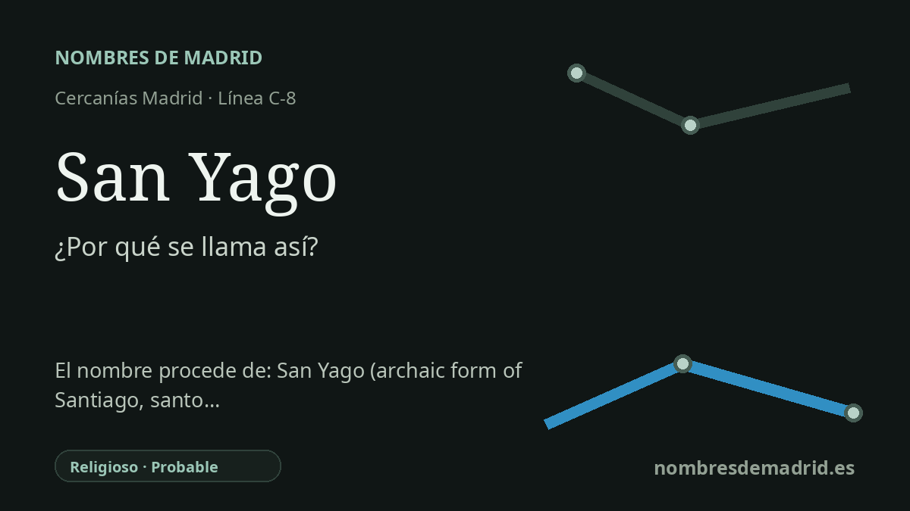

Publicado el · Investigación de Nombres de Madrid · Cómo verificamos cada origen · 7 fuentes consultadas
Respuesta rápida
San Yago conserva a la vista los componentes antiguos de Santiago: sant/san más Iago o Yago, la forma romance ibérica de Jacobo/Santiago. El nombre de la estación se interpreta mejor como un topónimo religioso, aunque no se ha localizado el acto local concreto que fijó el nombre del apeadero.
La historia del nombre
San Yago lleva un nombre que parece más antiguo que el Santiago moderno del español. Dicho de forma sencilla, el nombre remite al apóstol Santiago: San es el tratamiento de santidad, e Yago o Iago es una de las formas romances ibéricas del nombre Jacobo/Santiago. Por eso el nombre de la estación conserva separados los elementos que normalmente aparecen fusionados en Santiago.
El trasfondo lingüístico es especialmente visible en este caso. La Real Academia Galega explica Santiago como contracción de Sant Iago, procedente del latín sanctus e Iacobus. Xacopedia, siguiendo la explicación tradicional vinculada a la gramática histórica, también presenta formas como Yaco, Yagüe y Sant Yago en la evolución hacia Santiago. San Yago es, por tanto, un buen ejemplo de nombre religioso que funciona además como un fragmento fosilizado de historia lingüística.
En el plano ferroviario, el nombre corresponde a un apeadero de Galapagar, con acceso por la avenida Saltos del Sil, en Colonia España. ADIF sitúa el apeadero en el punto kilométrico 40,046 de la línea Madrid-Hendaya, y el CRTM lo recoge hoy con el nombre San Yago. La línea de este corredor se abrió en 1861 entre Madrid y El Escorial, pero la documentación histórica de transporte indica que San Yago no parece haber sido una de las paradas originales.
También importa el paisaje que lo rodea. La ruta senderista de la Comunidad de Madrid entre Galapagar, Las Zorreras y San Yago pasa por Galapagar, Colonia España y Las Zorreras, vinculando la estación con el borde suburbano y rural de las estribaciones del Guadarrama. Esto ayuda a entender que el nombre funcione como topónimo: el apeadero parece haber asumido una referencia local o de entorno, más que crear una denominación ferroviaria conmemorativa nueva.
La conclusión más sólida es lingüística, no archivística. San Yago se refiere muy probablemente a Santiago Apóstol a través de la familia de formas Sant Iago/San Yago, pero no se ha encontrado una orden primaria de denominación, expediente municipal de nomenclátor o anuncio ferroviario de apertura que diga exactamente cuándo recibió el apeadero este nombre. Por ello conviene mantener la etimología religiosa, pero bajar la confianza de verificada a probable y anotar que el servicio oficial actual de Cercanías es C-3a, no la etiqueta C-8 antigua que figura en la redacción de partida.